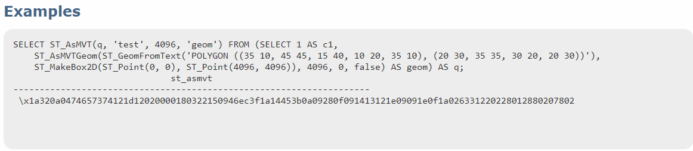
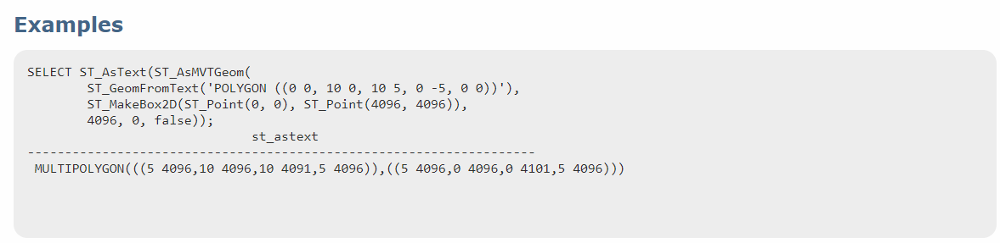

背景
- 矢量数据，注重空间位置展示，属性隐含其中。
- 在矢量切片之前，web端的矢量数据展示分两种：
- 按需请求，比如arcgis server发布的动态服务。这是按照范围内进行，返回要素和信息。这种频繁交互，增大服务器的压力。
- 一次加载全部，前端按需渲染。比如geoserver的wfs geojson格式加载 。这种遇到数据量大的时候，在页面初始加载时，会比较慢。
- 针对上述两种情况，如果把矢量进行和栅格数据那样，按照金字塔的方式进行切片，但是保留原来矢量属性，那加载方式就会提升。矢量切片标准是mapbox 最先提出的，相关标准移步这里
相关简介
- 矢量切片目前格式
- geojson、topjson、mvt(mapbox)
- 相关工具
- 目前我了解的矢量切片服务发布工具：arcpro、geoserver。其他的还没接触到
postgis中的ST_AsMVT和ST_AsMVTGeom
- ST_AsMVT 是postgis提供的空间函数，能够返回矢量切片，它和ST_AsMVTGeom是同时使用的。

ST_AsMVT 
ST_AsMVTGeom - ST_AsMVTGeom能够对给定范围查询出来的矢量，并转换为屏幕坐标，然后ST_AsMVT对数据进行压缩，返回.mvt格式。
- ST_AsMVT 是postgis提供的空间函数，能够返回矢量切片，它和ST_AsMVTGeom是同时使用的。
矢量切片服务器
- 现在开源的前端gis框架，都是支持XYZ请求来加载地图服务。因此，写一个接口，前端传入ZXY,然后根据这些值，计算出对应的经纬度范围，查询该范围内的矢量，然后利用postgis提供的方法就能得到矢量切片。
相关代码：
Code1
2
3
4
5
6
7
8
9
10
11
12
13
14
15
16
17
18
19
20
21
22
23
24
25
26//建立postgis连接
Dbpool = psycopg2.pool.SimpleConnectionPool(
1,
100,
dbname='GISMVT',
user='postgres',
host='localhost',
password='admin',
port='5432')
//重要步骤 SQL查询语句
// 'fills' 为source-layer (mapbox 加载矢量切片要用到)
query = "SELECT ST_AsMVT( tile , 'fills' , 4096 , 'geom' ) tiles FROM ( SELECT ST_AsMVTGeom( w.geom , ST_Transform( ST_MakeEnvelope ( %s,%s,%s,%s,4326),3857),4096,256,true) AS geom FROM (SELECT geom FROM public.china_point ) w ) AS tile ;"
//接口返回
@app.route('/tiles/<int:z>/<int:x>/<int:y>', methods=['GET'])
def tiles(z=0, x=0, y=0):
start_time = time.time()
tile = get_tile(z, x, y)
response = make_response(tile)
response.headers['Content-Type'] = "application/x-protobuf"
response.headers['Access-Control-Allow-Origin'] = "*"
response.headers['Access-Control-Allow-Methods'] = "POST,GET"
end_time = time.time()
print(".........耗时: %d s"%(end_time-start_time))
return response- 源代码地址： 在github上 这里
加载效果
- 前端框架使用的是mapbox，这个框架相较于openlayers，leaflet来说，api接口是很少的，这个相对来说是注重于渲染展示层。但是它的样式渲染表达式，直接手写的话也不好调试，不过官方提供的mapbox studio可以进行相关的渲染，然后得到表达式。具体直接去访问官网 MapBoxGL去查看即可。后续会介绍mapboxgl相关的基础。
- 结果展示：数据是随机生成的50万个点数据

番外篇
- 本来是打算月初就写好的，结果自己电脑突然抽风，系统崩溃，然后重装系统。然后网线光猫又坏了。。。。各种杂事推迟了。果然计划赶不上变化，但结果终归是好的。共勉！


{kind=link}
{kind=link}